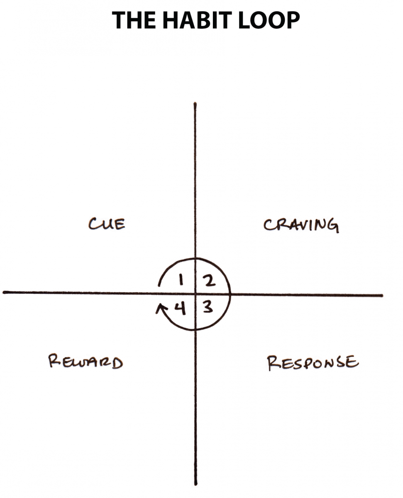
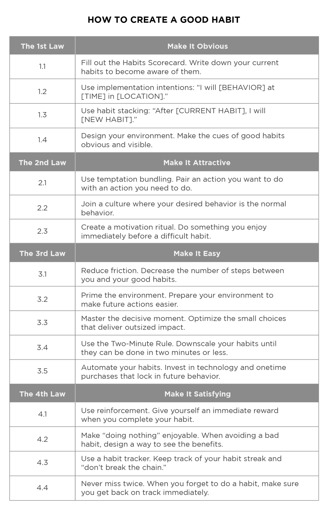
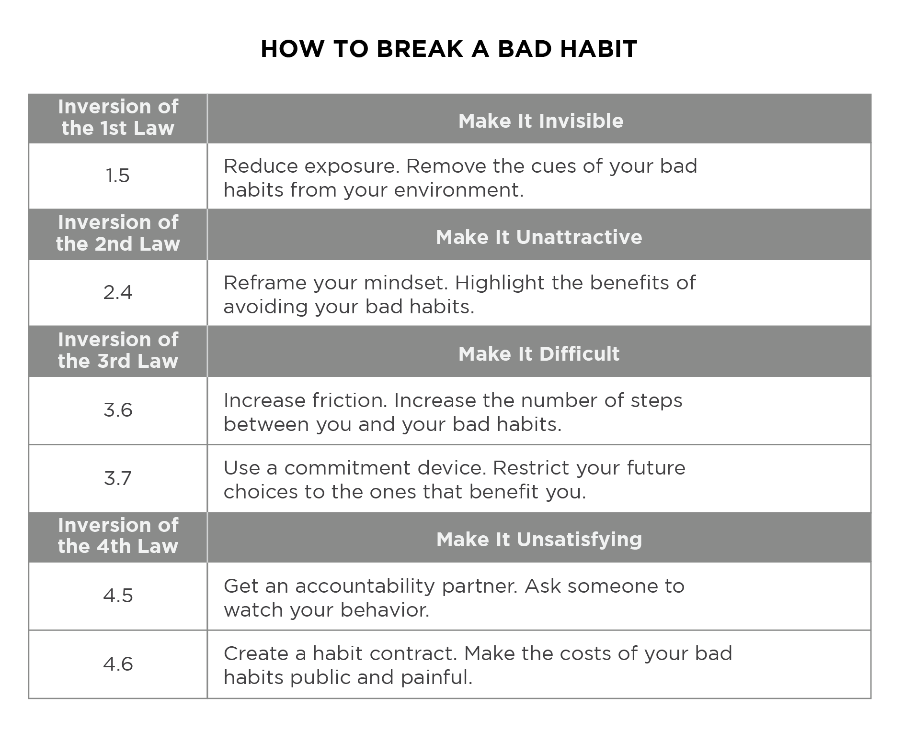

My notes on James Clear's Atomic Habits — a practical guide to changing your habits and getting 1% better every day. These are the ideas that stuck with me.

In three sentences
Atomic Habits is a comprehensive, practical guide on how to change your habits and get 1% better every day. Using a framework called the Four Laws of Behavior Change, it teaches a simple set of rules for creating good habits and breaking bad ones. The big idea: small changes compound into remarkable results.
3 key lessons
1. Small habits make a big difference
It's easy to overestimate one defining moment and underestimate small daily improvements. If you get 1% better each day for a year, you end up thirty-seven times better; 1% worse each day and you decline nearly to zero. What matters isn't where you are now, but whether your habits are putting you on the path toward success.
2. Forget goals — focus on your system
Goals are about the results you want; systems are about the processes that lead to them. If you're struggling to change, the problem isn't you — it's your system.
You do not rise to the level of your goals. You fall to the level of your systems.
3. Build identity-based habits
Lasting change starts with identity, not outcomes. Your behaviours reflect who you believe you are. To change for good: decide the type of person you want to be, then prove it to yourself with small wins. Every action is a vote for the type of person you wish to become.
Build better habits in 4 steps
Every habit runs on a four-step loop: cue triggers a craving, which drives a response, which delivers a reward — which then reinforces the cue. Round and round it goes until the habit is automatic.

Clear turns this loop into the Four Laws of Behavior Change — a set of rules for designing good habits and dismantling bad ones:
To create a good habit
- 1st law (Cue): Make it obvious.
- 2nd law (Craving): Make it attractive.
- 3rd law (Response): Make it easy.
- 4th law (Reward): Make it satisfying.
To break a bad habit
- Inversion of 1st law (Cue): Make it invisible.
- Inversion of 2nd law (Craving): Make it unattractive.
- Inversion of 3rd law (Response): Make it difficult.
- Inversion of 4th law (Reward): Make it unsatisfying.
Cheat sheet
The book's ideas compressed into a handy reference — one card for building good habits, one for breaking bad ones.


Favourite quotes
Every action you take is a vote for the type of person you wish to become. No single instance will transform your beliefs, but as the votes build up, so does the evidence of your new identity.
All big things come from small beginnings. The seed of every habit is a single, tiny decision. But as that decision is repeated, a habit sprouts and grows stronger.
True long-term thinking is goal-less thinking. It's not about any single accomplishment. It is about the cycle of endless refinement and continuous improvement.
Summary and images from jamesclear.com/atomic-habits. All credit to James Clear. Reproduced here as personal study notes.